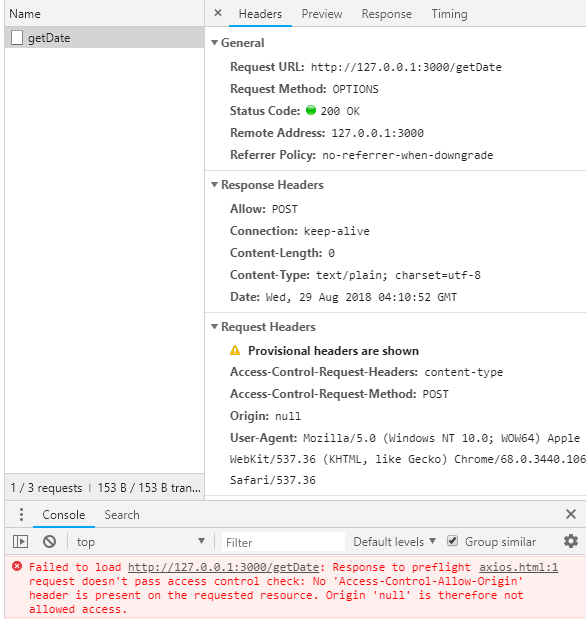
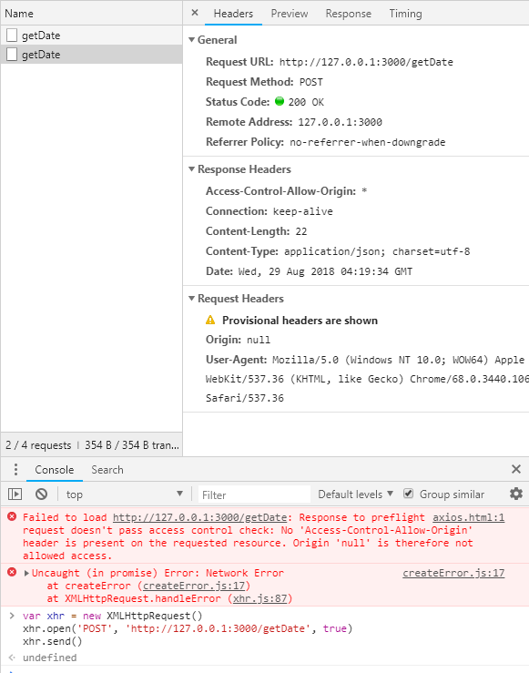
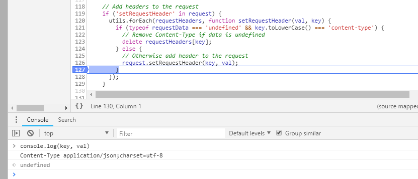
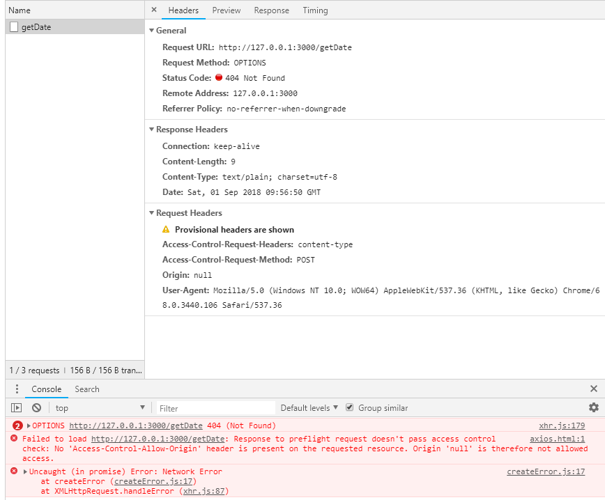
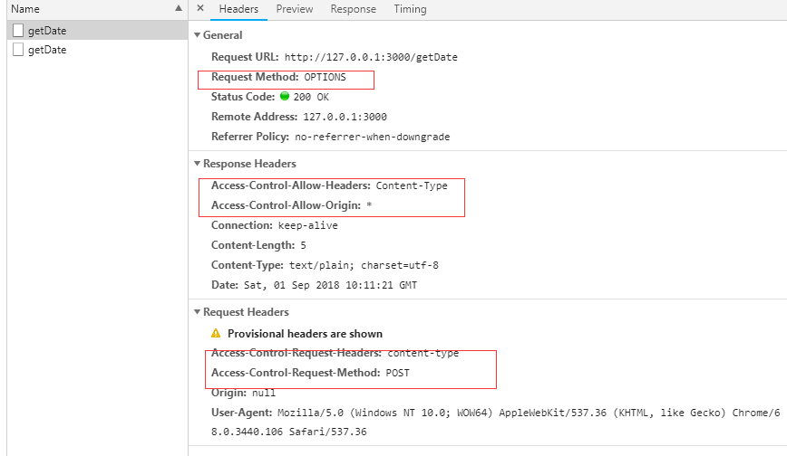
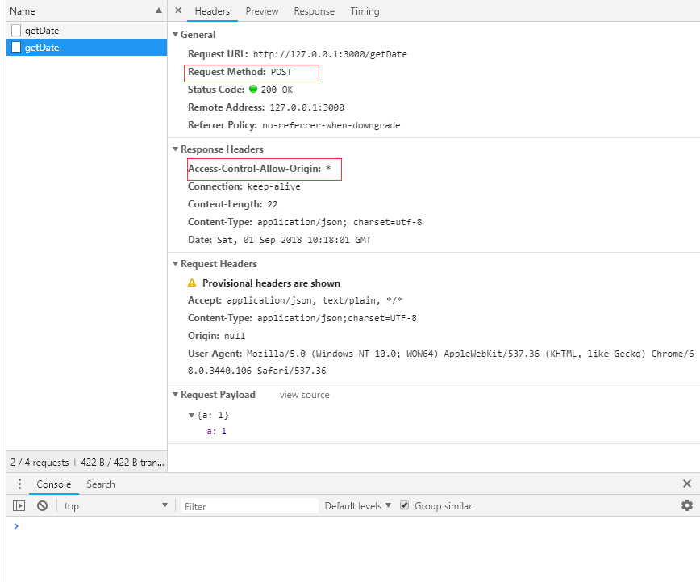

在一个开发web桌面应用的项目中，使用了axios向服务器发送请求，结果报了跨域请求的错误。页面代码大致如下：
1 | <script src="./node_modules/axios/dist/axios.js"></script> |

反复查看后台代码，明明是已经加上了跨域的头部Access-Control-Allow-Origin，可是还是请求失败。
代码倒是看不出任何问题，于是猜想是axios内部框架做了什么鬼祟，使用原生的XHR对象进行调试。

果然请求到了，并且看到返回头里面带上了允许跨域头。仔细比对两次请求发现，axios发的请求的method竟是OPTIONS，这是什么，html难道不是只有GET，POST吗！？翻查http mdn
xhr跨域请求
出于安全原因，浏览器限制从脚本内发起的跨源HTTP请求。 例如，XMLHttpRequest和Fetch API遵循同源策略。 这意味着使用这些API的Web应用程序只能从加载应用程序的同一个域请求HTTP资源，除非使用CORS头文件。以下三种情况下跨域请求的结果皆不相同。
简单请求
某些请求不会触发 CORS 预检请求。若请求满足所有下述条件，则该请求可视为“简单请求”：
- 使用下列方法之一：
- GET
- HEAD
- POST
- Fetch 规范定义了对 CORS 安全的首部字段集合，不得人为设置该集合之外的其他首部字段。该集合为：
- Accept
- Accept-Language
- Content-Language
- Content-Type （需要注意额外的限制）
- DPR
- Downlink
- Save-Data
- Viewport-Width
- Width
- Content-Type 的值仅限于下列三者之一：
- text/plain
- multipart/form-data
- application/x-www-form-urlencoded
- 请求中的任意XMLHttpRequestUpload 对象均没有注册任何事件监听器；XMLHttpRequestUpload 对象可以使用 XMLHttpRequest.upload 属性访问。（文件上传对象）
- 请求中没有使用 ReadableStream 对象。
预检请求
简单来说，请求不满足简单请求规范，则为预检请求。预检请求要求必须首先使用 OPTIONS 方法发起一个预检请求到服务器，以获知服务器是否允许该实际请求。
从文章开头的例子中可以看出我们的OPTIONS是一个预检请求，应该是由axios发送跨域请求的时候进行了头部的设置导致。从OPSTIONS的抓包上看，请求头里面倒是有需要预检的首部字段。
1 | Access-Control-Request-Method: POST |
看来是axios将请求头进行了设置导致跨域失败，进入axios源码查看，哪里进行了配置。进入源码查询发现axios在参数为json对象时，设置了content-type为application/json;charset=utf-8

解决方案一：修改请求头
一种解决方法是axios设置默认头部
1 | <script src="./node_modules/axios/dist/axios.js"></script> |
解决方案二：服务端添加预检支持
这毕竟是一个跨域资源，是多人共享的资源，不能保证每个人请求头都属于简单请求，所以应该在服务器端对预检请求添加支持。
1 | // 这里以koa为例 |
加上响应头之后，理应能够自定义content-type的值，且成功跨域才对。可是跑最开始的跨域请求却出现404

竟然是404，一顿推理，妄加猜测，应是服务器没有路径为/getDate，method 为 OPTIONS 的路由，在服务器端加上路由。
1 | router |
加上后自定义头部的跨域请求也可以正常跨域了


由上面2图可以看出，预检跨域请求，浏览器会发送2个请求到服务器端，一个是OPTIONS预检，一个是POST请求，产生2条抓包。
题外：跨域资源共享标准 （有些不常用，mark一下）
跨域资源共享标准（ cross-origin sharing standard ）允许在下列场景中使用跨域 HTTP 请求：
- XMLHttpRequest 或 Fetch 发起的跨域 HTTP 请求。
- Web 字体 (CSS 中通过 @font-face 使用跨域字体资源), 因此，网站就可以发布 TrueType 字体资源，并只允许已授权网站进行跨站调用。
- WebGL 贴图
- 使用 drawImage 将 Images/video 画面绘制到 canvas
- 样式表（使用 CSSOM）
- Scripts (未处理的异常)